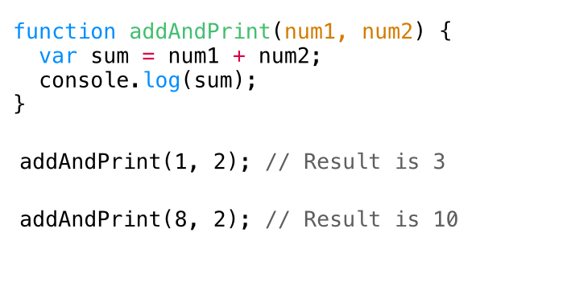

Intro to JS
What is programming?
Programming is the task of writing instructions in a language that the computer can understand to then perform those instructions.
Computers can perform tasks extremely quickly, but developers need to programmatically break down those tasks to provide step-by-step instructions to the computer.
Pseudo code
Pseudo code
A great way to break down a problem into small chunks is to use pseudo code.
Pseudo code is usually typed using comments, so that it has no effect on the program being written. It is typically written in a mixture of natural language and high-level programming constructs.
JS Comments
These comments for pseudo-code can be either single line or multi-line syntax:
We want to build a thermostat that checks the temperature every 10 minutes and aims to keep the temperature at a perfect level for us.
Let's pseudo code it together...
Task: In groups, pseudo code a Rock, Paper, Scissors game. The game has two players and is first to 3.
JavaScript
What is JavaScript?
- It is NOT Java!
- Originally called Mocha, then LiveScript, then JavaScript, then ECMAScript (currently ES2015)
- A language that was created in 10 days by Brendan Eich (May 1995)
- Cross-platform scripting language (executes a series of commands without being compiled)
- Loosely typed language (you do not declare the data types of variables explicitly)
What can you do with it?
A lot!
- Add interactivity (jQuery)
- Single Page Applications (React, Vue.js)
- Analytics, testing (Google Analytics, Optimizely, Mouse Flow)
- Data visualisation (D3.js)
- 3D rendering in the browser (Three.js)
- Native application development (React Native)
- Plus much more!
Our focus: interactivity
With regard to interactivity in JavaScript we will be repeatedly breaking down our code into 3 distinct steps:
- Event target (find an element(s) that will trigger an action)
- Event listener (listen for that action)
- Event handler (perform an output as a result of that action)
JavaScript Syntax
Let's have a look at the JavaScript syntax by building out a colour scheme switcher for a web page.
The use of semi-colons as line terminators
Don't let JavaScript try to insert semi-colons for you, be sure to use semi-colons. However, you'll see that you don't actually need them after you declare a function.
The keyword 'document'
Serves as an entry point into the web page's content. Another common keyword used in JavaScript is 'window'.
Named functions
Using named functions to control the flow of code execution is a key concept in any programming language (but we'll get to that next week).
A constructive use for IDs!!!
Codepen task:
-
Make the slow down light change to green instead of purple when the button is clicked.
-
Get the go light working when the user clicks the button.
Key Takeaways
-
JavaScript is a programming language that can run in the browser.
-
It can be used for many things, including adding interactivity to a site.
-
Pseudo code is a commonly used strategy to break problems down into small steps before actually writing any functional code.
Variables
Variables allow us to store data in our program for use later on. By assigning a value to a variable, we are effectively saving it in memory.
Assignment and re-assignment
Use the keyword var to assign a variable. If a variable has been
declared, you can then change its value using re-assignment.
Naming conventions
Variable names are usually written in lowerCamelCase. This means that the first word is lowercased and then any other words in the name are capitalised.
What can we store in a variable?
Here are the data types that can be stored in a variable:
- Boolean
- String
- Array
- Object
- Number
- Null
- Undefined
Data Type - Boolean

Booleans can have one of two values: true or false.
They are most commonly used in conditional statements (e.g. if/else).
Other values that are considered 'falsey' include: 0,
-0, null, NaN, undefined and
an empty string ("").
Data Type - String
Strings are used for working with words, sentences or sequences of characters. String literals are created by wrapping a sequence of characters with either single quotation marks ('hello') or double quotation marks ("hello").
Working with strings
Working with strings
Data Type - Object
Objects are a collection of properties, with each property being a
{key: value} pair. The value of an object property can be
any data type as well a function. A property that has a function as the value
is known as a method.
Working with objects
Data Type - Array
Arrays are list-like objects that hold a collection of values. The also have built-in methods to allow for iterating over values and adding/removing values.
Each item in an array has an index. However, the index starts from 0,not 1. So the first value is at the 0 index.
Working with arrays
Looping arrays
Data Type - Number
Numbers are declared without quotation marks and can be used for arithmetic.
A number with decimal places are known as 'floats'. Numbers can have both positive and negative values.
Working with numbers
Working with numbers (cont.)
Data Type - Null & Undefined
A variable that has not yet been assigned a value has a value of undefined.
undefined can also be assigned to a variable, although
it is recommended to use null.
null is the intentional absence of a value.
Image Randomiser App
Let's put our knowledge of data types into practice by building out an app.
Comparisons - equality
It is common for values to be compared with one another in programming. Comparing values allows for the conditional running of certain blocks of code.
However, equality in JavaScript can get a little funky.
Comparing values
Always use === and !== to compare values, unless you have a good reason
Logical operators
Logical operators can be used to check if multiple expressions evaluate
to true or false or to check the opposite truthy/falsy
value.
Working with logical operators

Conditionals
As we have come across before, conditional statements can be used to control the flow of your program.
Using conditionals
Key Takeaways
-
Variables are used to store data in memory for later use
-
There are a number of data types, including booleans, numbers, strings, objects, undefined and null
-
Use strict equality when comparing values
-
Logical operators all for multi-part expressions to be checked
-
Conditional statements help control the conditional flow of a programme
Functions
Functions are mini programs within your larger program. Once defined, functions can then be called in order to execute a block of code.
How to write functions

Invoking a function

Arguments

Passing arguments
jQuery Plugins
Slick Carousel
Site & docs: http://kenwheeler.github.io/slick/
Alternative: http://flickity.metafizzy.co/
Waypoints
Site: http://imakewebthings.com/waypoints/
Docs: http://imakewebthings.com/waypoints/guides/getting-started/
jQuery plugin registry
http://plugins.jquery.com/Build an application that takes a Celsius temperature, converts it to Fahrenheit and then changes the colour of the background to match the temperature. Bonus points if you do the following:
- Add the functionality to allow the user to convert the temperature from Fahrenheit to Celsius.
- Conditionally add different background images, instead of colours.
Key Takeaways
-
Functions help control the flow of the program
-
A function is a small block of code that can be invoked at certain points in the program to execute the given commands
-
jQuery has a great ecosystem of plugins, which allow developers to quickly build out common functionality.